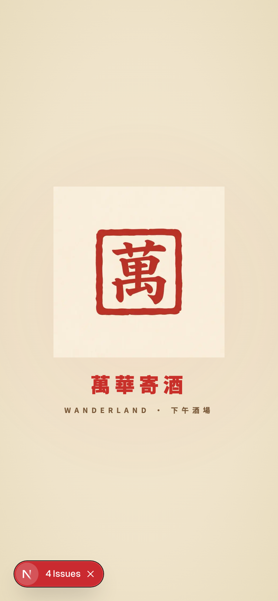
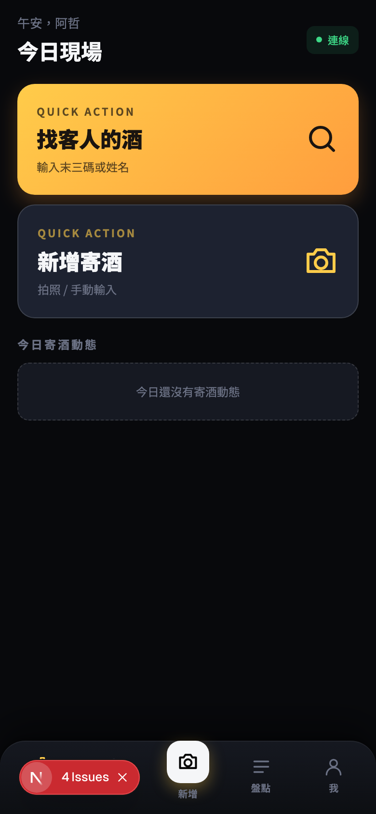
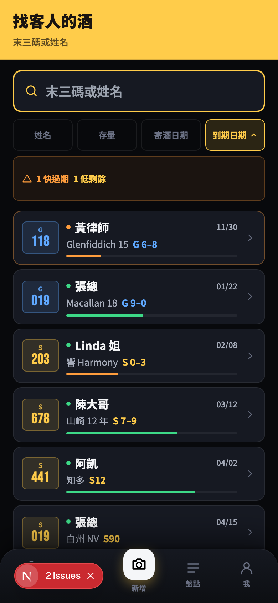
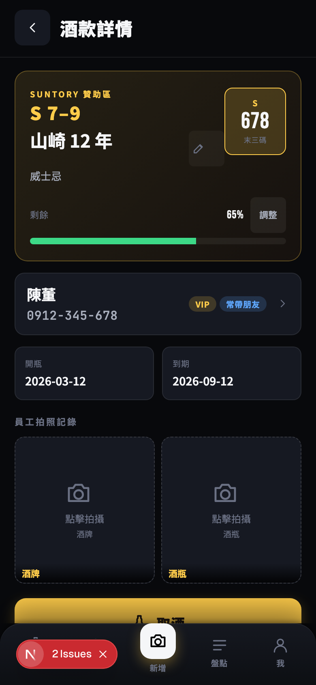
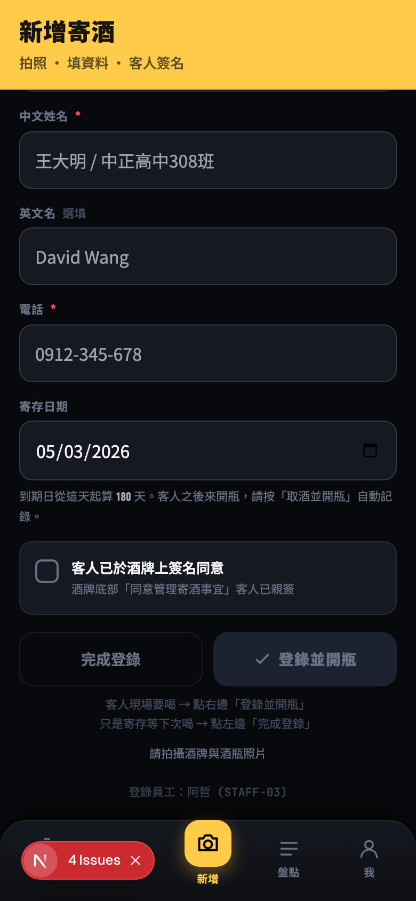
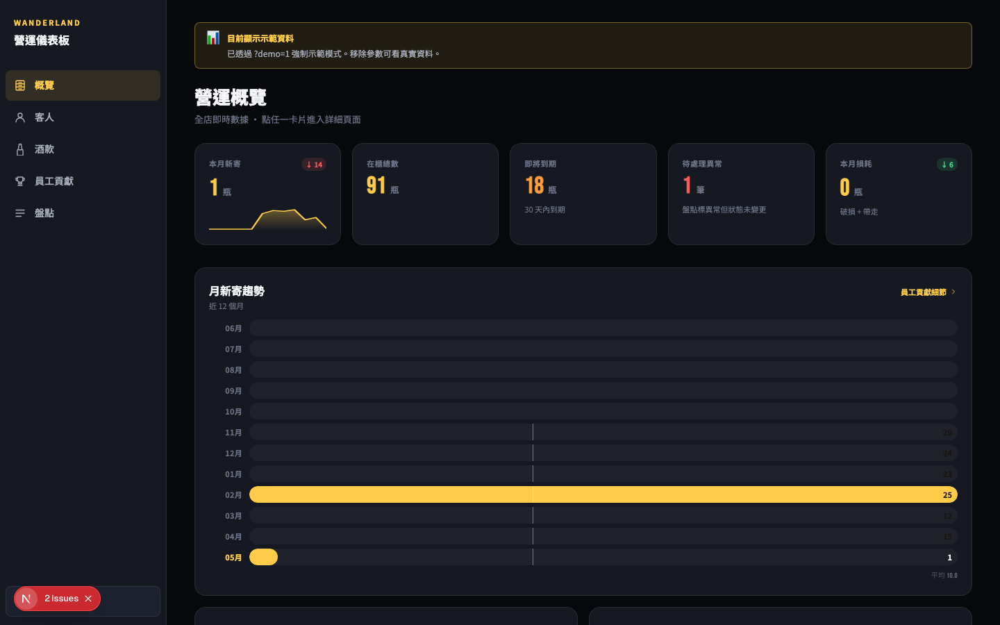
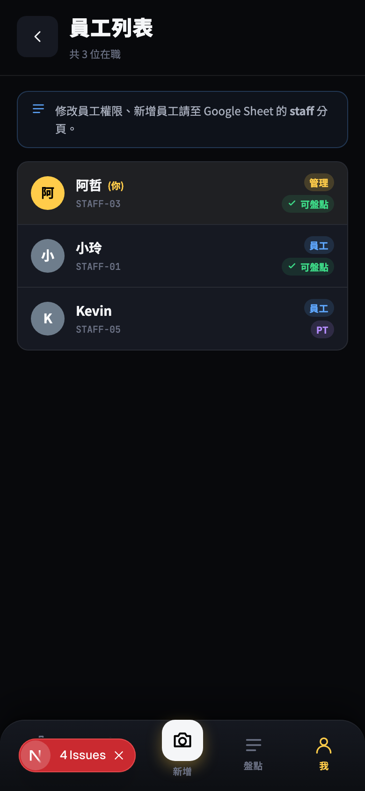

萬華世界寄酒管理系統
5 天 / 119 commits / 從 0 到 production 的寄酒管理 PWA — 員工版手機 + 管理桌機儀表板 + 客人 QR 自助查詢，背後接 Google Sheets 當資料庫。

為什麼要做這件事
寄酒（bottle keep）是日式酒場常見的客人服務 — 客人開了一支沒喝完的酒，存在店裡下次來繼續喝。但「誰寄了什麼酒、寄在哪一格、什麼時候開的、剩多少」這些資料，傳統作法就是一張紙寫一寫釘在酒上、一本本子記。
我們的店原本用 Google Sheet 維護整套，但問題很現實：
- 店員找客人的酒要爬一大張表 — 客人坐下說「我之前寄一瓶山崎，幫我倒一杯」，店員要 Ctrl+F 搜半天
- 盤點是場惡夢 — 70 多瓶酒分 7 區，每月要對一次帳，沒人想做
- 店長想看「這個月生意怎樣」要自己拉樞紐分析 — 翻 Sheet 翻到崩潰
- 客人不知道自己寄了什麼 — 來店問店員、店員再翻表查
- 資料容易跑掉 — 手機輸入電話自動把開頭 0 吃掉、姓名打錯，每幾週要清資料
我有一點 vibe coding 的經驗（之前做過萬華世界的營收儀表板、薪資模組），但這次規模更大 — 是一個多角色（員工 + 管理 + 客人）、多 device（手機 + 桌機）、多功能（CRUD + AI + auth + Drive）的 production 工具。
最終樣貌
5 天後的成品涵蓋三個角色的完整流程：員工版手機 PWA（每天用）、管理版桌機儀表板（全店分析）、客人版 QR 自助查詢（不用登入即可看自己寄的酒）。
主畫面：問候語自動切換（午安/晚安/凌晨）+ 兩個 quick action card（找客人的酒 / 新增寄酒）+ 今日寄酒動態 feed。

「找客人的酒」是員工最常用的功能。一個搜尋框 + 4 種排序 + 上方 alert banner 提示需要關注的酒：

點任一瓶進酒款詳情：客人卡（含 VIP / 常帶朋友 tag）+ 剩餘量條 + 開瓶/到期 + 員工拍照記錄 + 完整事件時間軸。S7-9 是 Suntory 子分區，黃色 hero 是 Suntory 視覺、藍色 hero 是一般區：

新增寄酒：頁底拆雙 CTA — 灰底 outline「完成登錄」（純存酒）vs 金色 primary「登錄並開瓶」（客人現場要喝，一鍵搞定）。

員工版手機 PWA 解決不了的「全店分析」，獨立桌機介面（不是另一個 app — 同一個 codebase 的另一個路由分組）：

同事建議要區分正職 / PT / 外援，但又不希望跟現有的角色 / 可盤點 pill 衝突。設計成正職隱藏、只有 PT 跟外援會多顯示一個 pill：

系統架構
三個前端介面（員工 PWA / 管理 dashboard / 客人 QR）共用同一個 codebase，後端走 Vercel Serverless 直接打 Google Sheets / Drive，AI vision provider 抽象成同一個介面：
驗證身分用三種機制並存：
AI OCR 走 provider 抽象層 — 5 家 vision API 用同一個 callVisionAI 介面，env 設哪個 key 就用哪家：
技術選型
| 工具 / 技術 | 選的理由 |
|---|---|
| Next.js 15 (App Router) + React 19 | 同一套 codebase 跨手機 PWA + 桌機 admin；Server Components 直接呼叫 Sheet API 不用寫額外 API layer |
| TypeScript | AI 寫 code 時 type 是 spec — 比註解更可靠的協作介面 |
| Tailwind CSS 3 | 沒有設計系統時最快的 UI 鋪法；CSS variables 處理主題（dark/light/auto） |
| Auth.js v5 (beta) | Google OAuth 直接整合 + JWT session 不用後端 cookie store |
| Google Sheets API + service account | 店家 Sheet 已存在；service account 一次設定終生不用管 |
| Google Drive API + Shared Drive | 照片儲存最簡單方案；Shared Drive 容量不算個人 quota |
| 多 AI provider 抽象層 | 不綁單一家；某家當機 / 漲價可以隨時換 |
| Vercel + GitHub auto-deploy | push 到 main 自動部署，不用 CI/CD config |
| qrcode lib（client） | 客人 QR canvas 在瀏覽器產生，server 不用畫圖 |
| CSS-only 圖表 | 桌機 dashboard 不裝 chart library — bar / sparkline / 7 區 grid 純 CSS + inline SVG，bundle size 不膨脹 |
外部服務與金鑰
跑起來最少需要：AUTH_SECRET + 4 個 GOOGLE_* + Vercel 帳號 + Google Workspace。AI OCR 是 nice-to-have，沒設員工自己手 key 也可以用。
AI 怎麼幫我做的
我從頭到尾沒寫過一行 TypeScript / React / CSS。但每一個畫面長什麼樣、按鈕該怎麼擺、資料流要怎麼跑，都是我決定。這個分工可以叫「Director 模式」：
- 寫程式碼（all of it）
- 系統架構提案
- Debug 推理 + 解法
- 視覺資產製作（icon / splash via nano banana）
- 文件撰寫（CLAUDE.md / README / SOP）
- UX / Product 決策
- 看到問題、拍照、描述症狀
- 視覺風格定調（木牌？hanko？）
- 選擇方向（AI 給選項，我拍板）
- 業務邏輯與商業判斷
1. 截圖驅動 — 拍手機畫面、貼進對話、講「這裡看起來怪怪的」。AI 看截圖 + 我對 UX 的口語直覺 = 它去 codebase 找對應 component 改。
2. 症狀描述 — 「我登出之後想換 Google 帳號，但它不讓我切」「PWA 開啟後會白畫面 5-8 秒」「酒牌辨識常常失敗」。我不需要知道根本原因，AI 推斷 + 我驗證。
3. 決策對話 — 「店長旁邊的 user profile 圓圈是不是該跟角色顏色一致？」「員工分成正職/PT/外援，介面要怎麼區隔？」AI 給選項 + 各自 pros/cons + 它的推薦，我決策。
踩到的坑，讓我更懂的事
5 天 119 commits 累積的踩雷紀錄。每條都變成 CLAUDE.md 的 Common Pitfalls 留給下個 session。
"0917643057" 進 sheet，cell 變成 917643057。根本原因：Sheets 預設把純數字字串當 number。
解法：寫入前先包一個 asText(value) — 字串前加單引號 '，Sheets 看到單引號就知道要存成 text。
根本原因：Drive API 預設只看個人 My Drive。
解法：supportsAllDrives: true + includeItemsFromAllDrives: true 兩個 flag 必須加在每個 Drive API call 上。
根本原因：stateless serverless 不能假設 instance affinity。
解法：拿掉 module-level cache。每次 render 直接打 Sheet。
解法：rm -rf .vercel && vercel link --project wl-bottle --yes 強制 link 到正確 project。
根本原因：React 19 dev strict mode 會 mount → unmount → remount。第一次 mount 設了 sessionStorage flag、被 unmount 丟掉；第二次 mount 讀 flag 看到 "shown"，直接 skip。
解法：flag 只在 splash 真的播完之後才寫。
{ "phone": "0917643057", ... 然後就沒了，沒有 }。根本原因：max_tokens 被吃光，model 還沒寫完 JSON。
解法：（1）max_tokens 提高到 1024；（2）parseLooseJson 加截斷救援 — 找 {、丟掉最後一個 unterminated string、補上 }、re-parse。救回大半 case。
根本原因（三層獨立）：(a) iOS 端 OS 的 pre-HTML 白；(b) HTML 抵達後 React hydrate 之前；(c) boot-splash hide 跟 welcome-splash mount 之間的 race condition。
解法（三層防線）：(1) manifest.background_color 米色 — Android cold start；(2) #boot-splash HTML 元素 — HTML 抵達就立即顯示；(3) WelcomeSplash 用 useLayoutEffect 確保自己 mount 後才隱藏 boot-splash。
解法：每寫完一個重要 feature 跑 /sync-context — 把這次學到的 conventions、踩到的坑、做了什麼決策、寫進 CLAUDE.md。下個 session 開頭 AI 自動 read 這個檔。
如果繼續往下
短期可以繼續做的：
- Notification 系統 — 客人到店、即將到期推播。Web Push / LINE Notify / Email 任一家都可以接
- 盤點異常 → 正式狀態快捷流程 — 異常清單上加直接帶 PIN prompt 完成正式變更
- /admin 真實資料 KPI 驗證 — 等 events ≥ 50 自動切到 real mode 後重新驗證所有 KPI 計算
- 更多 AI prompt 微調 — 擴充酒類別 set 或讓 AI 提建議
長期：
- 多店家版本 — 把 GOOGLE_SHEET_ID 抽成 per-tenant 設定，做成 SaaS 給其他酒場使用
- iPad 專用佈局 — 目前 iPad 用桌機版佈局，但握法不同，可以做專屬版
Takeaway
「Director 模式」的 AI 協作 — 我從頭到尾不寫程式碼，但每個 product 決策、每個 UX 細節、每個視覺風格都是我下判斷，AI 是執行者。這跟 pair programming 很不一樣 — 是「導演 + 製片」的關係：
這個分工的前提是症狀驅動的 debug 能力 — 我會描述「看到什麼但希望看到什麼」，AI 推理根本原因。我不需要懂 React 內部、不需要懂 Auth.js v5 callback chain，但我能精準說出哪裡不對勁。
可以複製的：
- 用 Google Sheets 當 production database 給「資料量 < 5 萬筆 + 店家本來就在用」的場景，是被低估的選項
- AI provider 抽象層（多家 vision API 同一介面）— 不綁單一廠商
- (app) / (admin) / 公開 c/ 路由分組同 codebase 服務多角色
- HMAC token + stateless 公開連結 — 不用 DB 就能做 secure link
- CLAUDE.md + /sync-context 的工作流 — 任何跨 session 的 AI 開發都該做
不能照搬的：
- 5 天從零到 production 的速度，前提是撰寫者已經有 vibe coding 經驗。第一次玩這個的人應該預期 2-3 倍時間
- Google Sheets 寫入 latency 約 200-500ms，不適合高頻寫入或 real-time 場景
- 「Director 模式」的有效性取決於你對該領域的 product / UX sense
起手式 1（架構先談）：
「我想做一個 [你的領域] 的工具，使用者是 [角色 A / B / C]。我自己懂 [Y / N]，會用的工具有 [Google Sheet / Notion / Airtable / 其他]。給我 3 個 stack 選項加 pros/cons，重點是『最少額外服務、最容易維護』。」
起手式 2（資料模型先確定）：
「這是我目前用 [Sheet / Notion 表格] 維護的資料樣本（貼一段）。我想做一個工具讓 [使用者] 能 [動作 A / B / C]。請幫我設計：（1）資料表 schema 改怎麼動？（2）如果要保留向下相容（不 break 現有資料）要注意什麼？」
兩個起手式的共同點：先把「不寫程式也能釐清的事」釐清完，再讓 AI 開始寫 code。架構錯了 / 資料模型錯了 / 角色定義錯了，後面寫再多 code 都白搭。
開發時間線
整理自 git log 119 commits + CLAUDE.md + README.md：
| 階段 | 日期 | commits | 主要產出 |
|---|---|---|---|
| Phase 1：基礎架構 | 4/29-30 | ~25 | 7 張 Sheet + Auth.js + Drive 上傳 + 5 個主畫面 |
| Phase 2：核心功能完整 | 4/30-5/1 | ~25 | 帶走/轉送/破損 + 客人詳情 + 盤點 cycle + 排行 |
| Phase 3：UI polish + AI OCR | 5/1 | ~20 | 多 provider AI + Suntory + sort chips + 編輯 metadata |
| Phase 4：文件 + 跨 device | 5/1-2 | ~15 | 手動匯入指南網頁化 + tablet 斷點 + loading skeletons |
| Phase 5：桌機儀表板 + 客人 QR | 5/2 | ~15 | /admin/* + /c/<token> + 客人 QR modal |
| Phase 6：精修 + 上線準備 | 5/3 | ~19 | hanko icon + 雙段 splash + 雇用類型 + 雙 CTA + 副 filter + production cutover SOP |